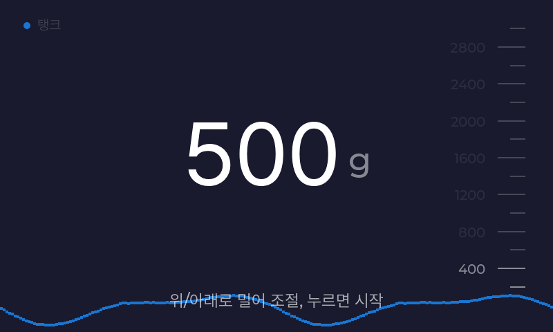
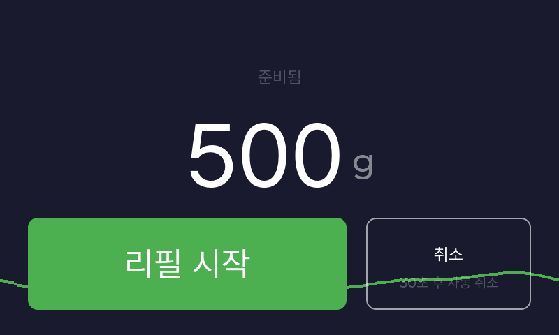
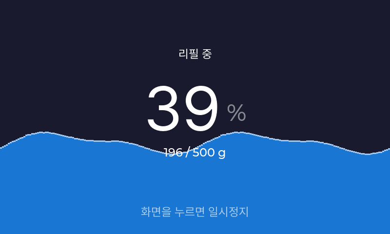
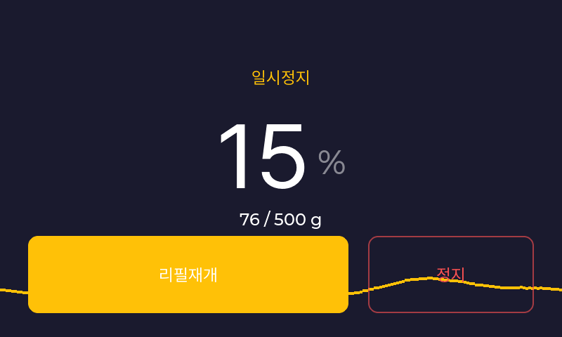
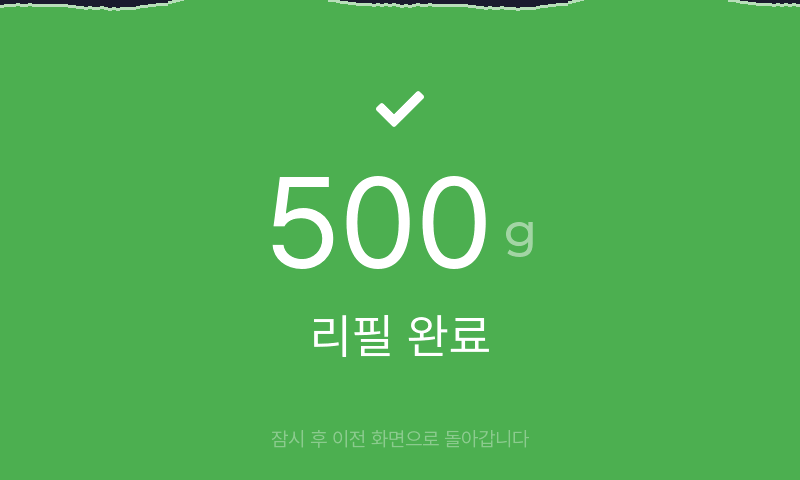
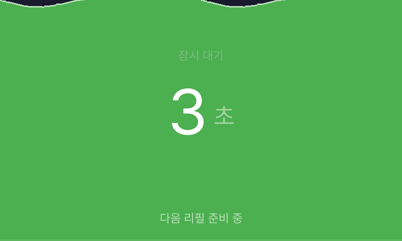

01
리필량 확인
양과 단위를 확인하세요. 조절 안내가 보이면 위아래로 밀어 양을 바꾸세요.

양과 단위를 확인하세요. 조절 안내가 보이면 위아래로 밀어 양을 바꾸세요.

양과 용기 위치를 확인한 뒤 화면을 누르세요. 확인창이 뜨면 리필 시작을 누르세요.

리필 중에는 자리를 비우거나 용기와 노즐을 움직이지 마세요.
잠깐 멈추려면 화면을 누르세요.

계속 채우려면 리필재개, 그만 채우려면 정지를 누르세요.
넘칠 것 같거나 이상이 있으면 바로 멈추고 직원을 부르세요.

남은 액체가 떨어질 수 있습니다. 용기를 잠시 그대로 두세요.

처음 화면으로 돌아오고 액체가 다 떨어지면 용기를 꺼내세요.
정해진 양만 채우는 기기일 수 있습니다. 용기가 작으면 직원을 부르세요.
계속 시작 버튼을 누르지 말고 직원을 부르세요. 리필 중이면 화면을 누른 뒤 정지를 누르세요.